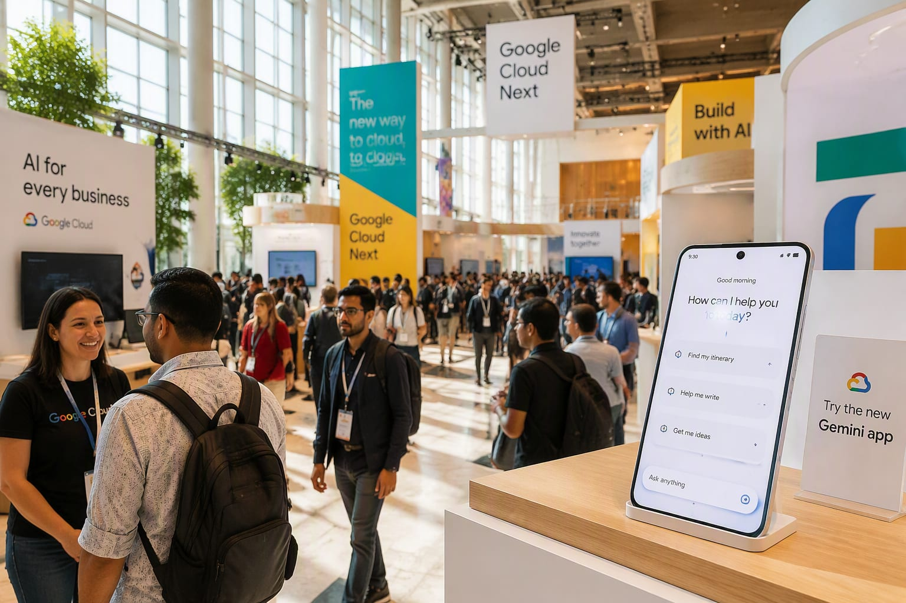

The 2026 World AI Conference closed in Shanghai on July 20 after four days of record debuts — headlined by the world’s first commercial AI agent smartphone.
The agent phone is the artifact everyone circled: a handset where the assistant books, buys and coordinates across apps on the user’s behalf — the moment agent software stopped living in a browser tab. It shared the floor with MiniMax’s M3 multimodal model, StepFun’s agent operating system and Huawei’s Atlas 950 supernode system, a statement about domestic compute at datacenter scale.
State media counted more than 300 global product firsts across the four days, and international coverage — from the South China Morning Post to People’s Daily — read the conference as China’s answer to the application-layer question: not just who has the best model, but who puts agents in consumers’ pockets first.
“The world’s first AI agent smartphone made its debut at WAIC 2026, promoted as one of the conference’s flagship innovations alongside humanoid robots and dexterous hands.”
“Over 300 new AI products debuted at the 2026 World AI Conference, including the MiniMax M3 multimodal model and Huawei’s Atlas 950 supernode system.”